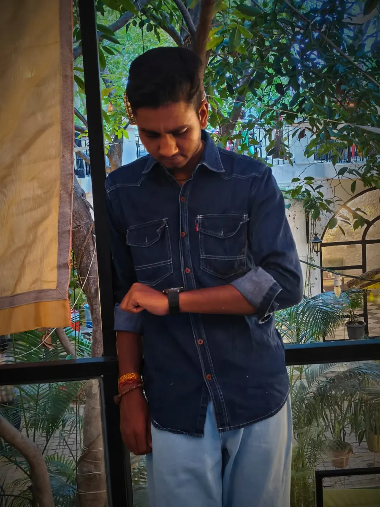
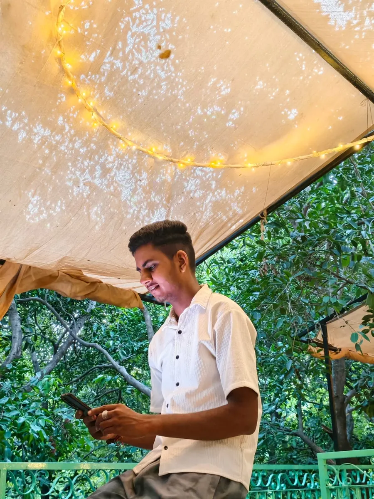
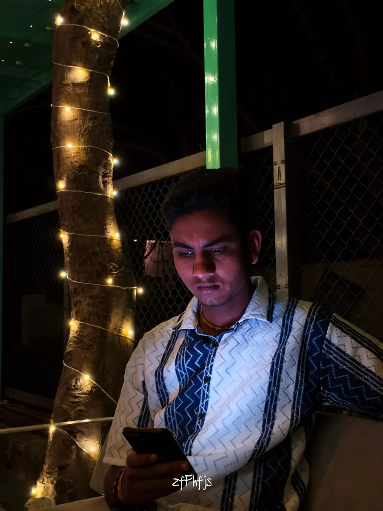

▶
▶Bhajan & Devotional Music
Bhajan Sandhya · Add video link in config.js
PHOTO & VIDEO GALLERY
Explore performance photographs and video spaces for bhajans, live vocals and instrument sessions.
01 · PHOTO GALLERY
Use the filters to explore different kinds of moments.







02 · VIDEO GALLERY
Add the real YouTube or Instagram Reel URLs in config.js when available. These cards are prepared for separate videos.
▶▶▶Video clips were not included in the provided files, so the website includes dedicated video cards ready for your real video URLs. No fake playback is presented as a real performance.